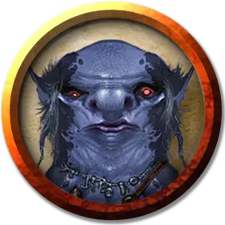

Ксварт колдун Раксиворта
Xvart Warlock of Raxivort
Маленький Гуманоид (Ксварт), хаотично-злой

Класс Доспеха 12 (15 с доспехами мага)
Хиты 22 (5к6 + 5)
Скорость 30 футов
| мод | спас | ||
|---|---|---|---|
| СИЛ | 8 | −1 | −1 |
| ЛОВ | 14 | +2 | +2 |
| ТЕЛ | 12 | +1 | +1 |
| мод | спас | ||
|---|---|---|---|
| ИНТ | 8 | −1 | −1 |
| МДР | 11 | +0 | +0 |
| ХАР | 12 | +1 | +1 |
Навыки Скрытность +3
Чувства тёмное зрение 30 футов, пассивное Восприятие 10
Языки Бездны
Опасность 1 (200 опыта)
Бонус мастерства +2
Среда обитания Холмы, Подземье
Особенности
Врождённое колдовство. Заклинательные способности ксварта основаны на Харизме. Он может накладывать следующие заклинания без материальных компонентов:
• Неограниченно: обнаружение магии [detect magic], доспехи мага [mage armor] (только на себя).
Использование заклинаний. Ксварт является заклинателем 3-го уровня. Его заклинательная способность Харизма (Сл спасброска от заклинаний 11, +3 к попаданию заклинаниями). Он восстанавливает все потраченные ячейки заклинаний после завершения короткого или продолжительного отдыха. Он знает следующие заклинания колдуна:
• Заговоры (неограниченно): мистический заряд [eldritch blast], волшебная рука [mage hand], малая иллюзия [minor illusion], ядовитые брызги [poison spray], фокусы [prestidigitation].
• 1–2 уровень (2 ячейки 2-го уровня): огненные ладони [burning hands], поспешное отступление [expeditious retreat], невидимость [invisibility], палящий луч [scorching ray].
Низкое коварство. Ксварт может совершать действие Отход бонусным действием каждый ход.
Благословение Раксиворта. . Когда ксварт уменьшает хиты врага до 0, он получает 4 временных хита.
Язык Раксиворта. . Ксварт может общаться с обычными летучими мышами и крысами, а также с гигантскими летучими мышами и гигантскими крысами.
Действия
Скимитар. . Рукопашная атака оружием: +4 к попаданию, досягаемость 5 футов, одна цель. Попадание: 5 (1к6 + 2) рубящего урона.
Описание
См. дополнительно статью: "Бестиарий: Ксварты"